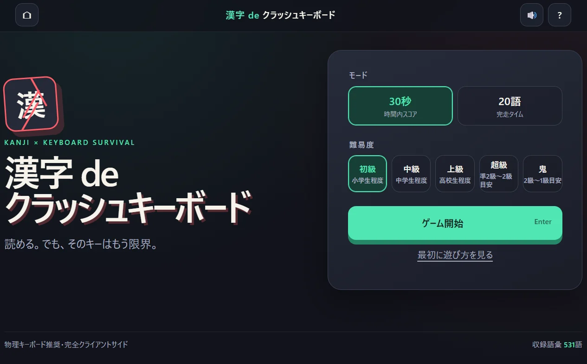
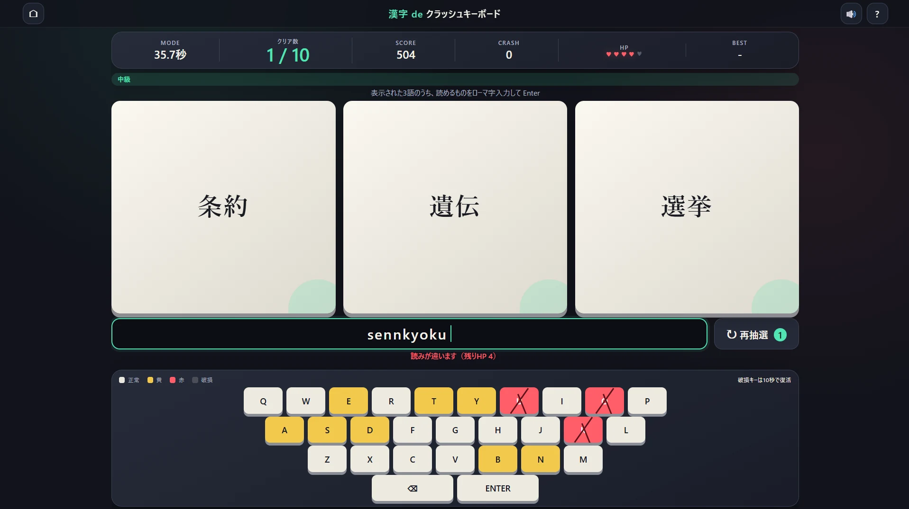

OVERVIEW
漢字 de
クラッシュキーボード
画面に並ぶ3つの漢字語から、読めるものを1つ選んでローマ字入力。正解を重ねるほど使用キーが傷み、やがて入力不能になるルールが、単純な早打ちをサバイバルゲームへ変えます。
使った文字キーは判定ごとに摩耗し、同じキーを続けて使うと破損します。正解時に使わなかったキーは回復するため、読みやすさだけでなく「どの語を選べばキーボードを長持ちさせられるか」という判断も重要です。壊れた文字は Shift と反対側のキーを組み合わせて入力できます。
FEATURE REPORT
ゲームの特徴
3語から選ぶ
表示された3語のうち、読めるものならどれを選んでも正解。漢字力とキーの残り具合を見比べて入力する語を決めます。
キーが摩耗する
使用したキーは正常から黄、赤へ変化し、3判定連続で使うと破損。誤答やBackspaceも無傷では済みません。
壊れてからが本番
破損した文字は Shift＋反対側キーで代替入力。限られた再抽選も使い、入力経路を組み替えて続行します。
PLAY REPORT
摩耗するキーボードを見ながら入力

BEFORE PLAY
基本ルールとプレイ前のご案内
- 3語から1語をローマ字入力。読みを入力して Enter で判定します。30秒でスコアを競うモードと、20語の完走時間を競うモードがあります。
- 正解時は未使用キーが回復。使う文字が偏らない語を選ぶほど、キーボード全体を長く保ちやすくなります。
- 壊れた文字は代替入力。Shift とキーボード反対側の対応キーを組み合わせて入力します。Shift 自身も使い続けると摩耗します。
- PC・物理キーボード推奨。キー配置と同時押しをゲーム性に使用します。スマートフォンより、PCブラウザでのプレイをおすすめします。
- 開発中の作品です。語彙、難易度、バランス、画面構成などを予告なく変更する場合があります。難易度は初級・中級・上級・超級・鬼の5段階です。表記は本ゲーム独自の目安で、漢検の公式判定ではありません。
掲載画像は、制作者から提供されたゲーム画面をポータル表示用に最適化して使用しています。